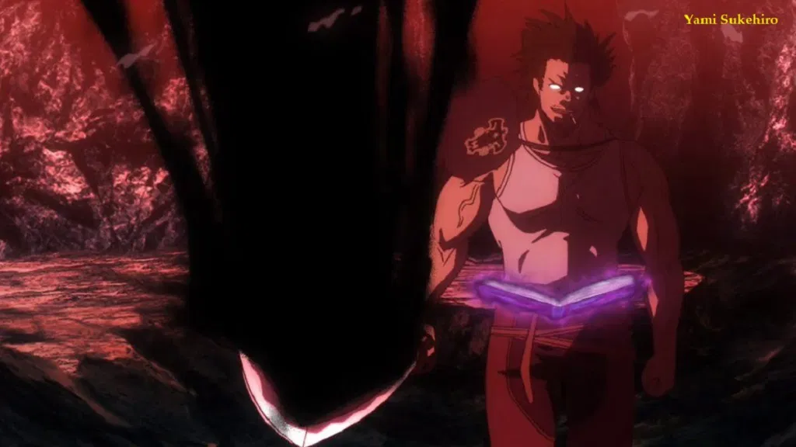

Asta
Asta merupakan protagonist utama dalam cerita Black Clover yang memiliki cita-cita untuk menjadi Kaisar Sihir di kerajaan Clover. Uniknya, dia tidak memiliki mana/sihir sama sekali di dalam tubuhnya. Akan tetapi, Asta memiliki kekuatan Anti Sihir yang membuatnya lebih unggul dibandingkan ksatria sihir yang lain. Asta mewarisi Grimoire milik Licht yang berisi sihir pedang. Namun, Grimoire milik Asta sangat spesial karena Grimoire tersebut berdaun lima. Selain itu, Asta dapat menggunakan pedang itu dan menyelimutinya dengan Anti Sihir miliknya. Dengan pedang Anti Sihir itulah, Asta akan menebas lawannya tanpa rasa gentar. 
Yami Sukehiro
Yami Sukehiro adalah Komandan Kesatria Sihir Regu Banteng Hitam. Sebagai Komandan, Yami selalu bersikap kasar kepada semua anggotanya. Namun Ia sangat peduli dan terus memaksa rekannya untuk “Keluar dari batasnya”. Dengan begitu semua anggota Black Bull bisa berkembang dengan cepat dan bahkan bisa mendapatkan penghargaan Squad terbaik di kerajaan Clover. Sebenarnya Yami bukanlah Kesatria sihir kelahiran kerajaan Clover. Namun Ia merupakan seseorang yang berasal dari negri Hino (masih misteri) yang terdampar di kerajaan Clover. Yami merupakan seorang pengguna Pedang Kegelapan. Tebasan dari pedangnya mampu membelah Dimensi dan bahkan Iblispun bisa ia tebas dengan mudah. Kekuatannya memang berbasis sihir Kegelapan dan dipadukan dengan kekuatan KI serta keterampilannya dalam menggunakan Pedang
Nacht
acht Faust Merupakan Wakil Komandan Regu Banteng Hitam. Nacht adalah anggota kesatria sihir Black Bull yang baru diperkenalkan. Dari awal Episode tidak ada cerita sedikitpun mengenai karakter nacht ini. Sehingga ketika pertama kali muncul dan di perkenalkan, Banyak fans yang terkejut (termasuk saya). Nacht ini sangat Overpower, Ia memiliki banyak Iblis yang bisa ia kendalikan. Nacht bertugas untuk menjadi mata-mata di kerajaan Spade. Sehingga ia di perkenalkan pada Arc Kerajaan Spade. Kemunculannya menjadi sangat menggemparkan karna ia memiliki banyak iblis yang bisa ia kendalikan. Bahkan ia bisa memunculkan sosok monster kecil yang berada di pundaknya. Nantinya Nacht akan mengajari Asta agar ia bisa mengendalikan Iblisnya (menjalin Kontrak). Dengan begitu pasukan Black Bull akan siap untuk menghajar 3 bersaudara kerajaan Spade beserta para iblisnya.
Noelle Silva
Noelle merupakan salah satu bangsawan yang bergabung dengan regu kesatria sihir black bull. Noelle berasal dari keluarga Silva, Ia memiliki keluarga yang sangat hebat dan bahkan kakanya menjadi salah satu dari komandan kesatria sihir kerajaan Clover. Kekuatan Noelle adalah sihir air, pada awalnya ia tidak bisa mengendalikan kekuatan airnya yang sangat besar. Namun setelah bergabung dengan Black Bull maka kekuatannya semakin bisa di kontrol dengan baik. Bahkan saat ini ia bisa menggunakan zirah perang seperti milik Ibunya.